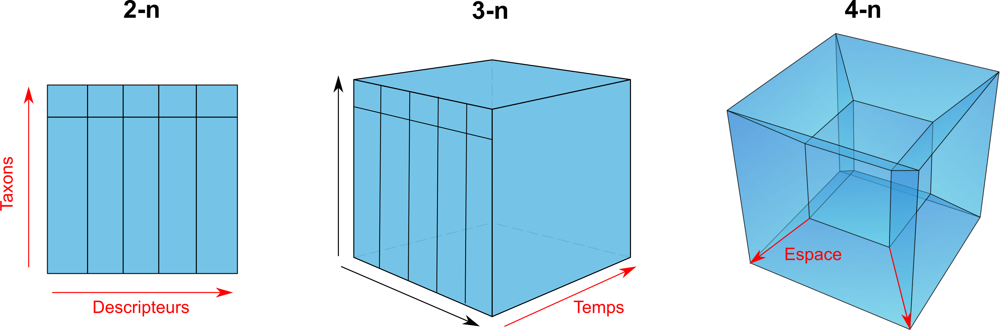
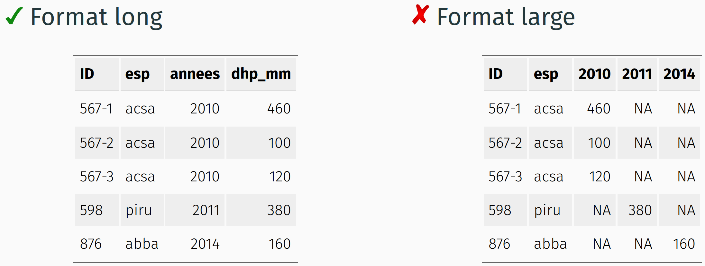
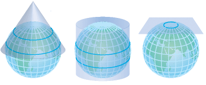

2 Données écologiques
Les données jouent un rôle essentiel dans la réponse aux questions de recherche en écologie computationnelle. Elles renferment l’information qui sera ultérieurement analysée, visualisée et communiquée. Comprendre les différents types de données utilisés dans ce domaine est fondamental pour assurer une collecte précise et une organisation adéquate, permettant ainsi d’exploiter au mieux ces données lors des étapes ultérieures de l’analyse écologique. Dans ce chapitre, nous explorerons en détail les types de données couramment rencontrés en écologie computationnelle pour faciliter la structuration.
Qu’est-ce qu’une donnée en écologie ?
Les données écologiques sont le résultat de la collecte, qui se fait souvent par le biais d’échantillonnage. Dans ce domaine, il est courant de rencontrer différents formats et types de données. En écologie, les données sont classées en quatre dimensions ou classes d’information :
- Données environnementales : Elles fournissent des informations sur les caractéristiques de l’environnement, telles que la température, l’humidité, la qualité de l’eau, etc.
- Données taxonomiques : Elles se rapportent à l’identification et à la classification des espèces présentes dans un écosystème, y compris les plantes, les animaux, les microorganismes, etc.
- Données temporelles : Elles enregistrent les variations des caractéristiques écologiques au fil du temps, permettant ainsi d’analyser les changements saisonniers, les tendances à long terme, etc.
- Données spatiales : Elles décrivent la répartition géographique des espèces et des caractéristiques environnementales, en utilisant des coordonnées géographiques ou d’autres systèmes de localisation.
Les données écologiques présentent une multidimensionnalité qui les rend complexes à saisir et à stocker. Par exemple, prenons l’exemple de la caractérisation de la succession d’une forêt. Des biologistes effectuent des mesures sur chaque arbre, en enregistrant l’identifiant de l’individu (ID), l’espèce, la localisation, le diamètre à hauteur de poitrine (DHP) et l’année de mesure, car les relevés seront répétés dans le temps. La multitude de dimensions des données nécessite une rigueur dans le formatage des données afin de bien les organiser et de maintenir les relations logiques.
La complexité de ces données multidimensionnelles réside dans le fait que chaque arbre représente une entité unique avec plusieurs caractéristiques qui varient dans le temps. Pour une analyse adéquate de la succession de la forêt, il est crucial de maintenir une structure de données cohérente et précise, en établissant des liens logiques entre les différentes dimensions, telles que l’identifiant de l’individu, l’espèce, la localisation, le DHP et l’année de mesure. Cela permettra une exploration et une interprétation efficaces des données, ainsi qu’une comparaison et une analyse sur le long terme.
En organisant correctement les données écologiques et en maintenant leurs relations logiques, les chercheurs peuvent tirer pleinement parti de ces informations pour répondre aux questions de recherche, détecter des tendances, prendre des décisions éclairées et contribuer à la compréhension des écosystèmes. Un formatage adéquat des données est donc essentiel pour garantir leur intégrité, leur accessibilité et leur réutilisabilité à long terme.
2.1 Le format des données
Les données sont généralement assemblées dans des tableaux, par exemple avec le tableur Excel. Le format de la donnée fait référence au format donné au tableau, aux colonnes, aux noms de colonnes et au valeurs entrées. Voici quelques bonnes pratiques à garder en tête lors du formatage.
1. Un jeu de données, un tableau
Pour représenter efficacement les données en tableau et organiser les données avec rigueur, chaque jeu de données doit être saisi dans son propre tableau. Ainsi, un tableau contient un type d’information. Pour ajouter des données sur le climat à l’exemple de relevé écologique d’une forêt, on ajoutera un nouveau tableau dans lequel seront notées la localisation, la date et une série de variables climatiques.
2. Privilégier un format long
On retrouve généralement deux types de formats, le format large et le format long. Alors que le format large peut contenir des valeurs manquantes puisqu’une variable est saisie dans plusieurs colonnes, le format long est plus propre et se prête beaucoup mieux au traitement des données.

Dans le format long, une ligne comprend une observation, c’est-à-dire une variable par colonne et une valeur au croisement d’une ligne et d’une colonne.

- Chaque variable doit être une colonne.
- Chaque observation de la variable doit être dans une ligne distincte.
- Chaque valeur est saisie dans sa propre cellule.
NOTE : votre fichier de données destiné au stockage à long terme ne doit contenir que des données brutes et aucun champ calculé (par exemple, une colonne avec une moyenne, etc..)
3. Choisir des noms de colonne explicites
Privilégier les noms de colonnes courts, sans accents, sans espaces et explicites. Il est recommandé d’attacher les unités au nom de la colonne s’il n’y a pas de métadonnées (eg. dhp_mm).
Il existe plusieurs conventions de dénomination des variables que nous appelons cases. Ces cases décrivent les règles de formatage des noms pour les noms composés de deux mots ou plus. Par souci de standardisation, nous utiliserons le snake_case dans ce cours.
2.2 Les types de données
Lorsqu’il s’agit de manipuler des données en informatique, il est essentiel de comprendre les différents types de données et l’importance de bien définir le type de chaque donnée. Les types de données déterminent comment les informations sont stockées en mémoire et comment elles peuvent être traitées par les programmes. Ils jouent un rôle fondamental dans la garantie de l’intégrité des données, de la performance des opérations et de la fiabilité des résultats obtenus.
En attribuant le bon type à une donnée, on lui donne un sens spécifique et on définit les opérations qui peuvent être effectuées sur cette donnée. Par exemple, les nombres entiers, les nombres décimaux, les chaînes de caractères et les booléens sont des types de données couramment utilisés. Chacun de ces types de données a des caractéristiques et des règles qui lui sont propres, ce qui permet aux programmes de les manipuler de manière appropriée.
En définissant correctement le type des données, on évite les erreurs de manipulation ou d’interprétation. Par exemple, si une variable est déclarée comme étant de type entier, on peut s’assurer qu’elle ne contiendra que des valeurs numériques entières, ce qui permet d’éviter des incohérences lors des calculs ou des comparaisons. De même, en définissant le type des données entrées par l’utilisateur, on peut valider et filtrer ces entrées pour s’assurer de leur conformité aux attentes du programme.
La définition appropriée des types de données est cruciale pour garantir la cohérence, la fiabilité et la sécurité des opérations informatiques. Cela permet également d’optimiser les performances et d’améliorer la compréhension du code. En informatique, on distingue plusieurs types :
| Appellation | Type | Valeurs | Taille |
|---|---|---|---|
BOLEAN |
Booléen | vrai/faux | 1 octet |
INTEGER |
Entiers | -998, 123 | 1 à 4 octets |
DOUBLE, FLOAT, REAL |
Nombres réels | 9.98, -4.34 | 4 à 8 octets |
CHAR,VARCHAR |
Chaine de caractères | lapin | n x 1 à 8 octets |
TIMESTAMP,DATE,TIME |
Dates et heures | 1998-02-16 | 4 à 8 octets |
Les données temporelles
La plupart des langages de programmation proposent les types TIMESTAMP, DATE et TIME pour représenter la donnée temporelle. Il est recommandé d’utiliser un de ces types pour tenir compte du fuseau horaire et de l’effet de l’heure d’été et d’hiver, car ils offrent un format standardisé compréhensible dans différents pays et systèmes.
TIMESTAMP(Heure et temps):YYYY-MM-ddThh:mm:ss. ex.1977-04-22T01:00:00-05:00ou1977-04-22T06:00:00ZDATE:YYYY-MM-dd. ex. 1997-04-22TIME:HH:mm:ssdans un système de 24 heures. ex. 01:30:00.
Les données taxonomiques
La donnée taxonomique est particulièrement complexe à gérer. Vous aurez remarqué que la classification des espèces est en constante révision et sera amenée à être complètement revue pour tenir compte des bactéries. En effet, il n’existe pas une seule classification qui ne permette de distinguer toutes les espèces. Le mode de reproduction et l’histoire de vie de chacun des organismes posent d’importants défis à l’identification des espèces et c’est pourquoi la taxonomie d’un organisme comporte souvent de nombreux synonymes et révisions.
| Option | Exemple |
|---|---|
| 1. Code spécifique à l’étude | ACSA |
| 2. Code du ministère | ERS |
| 3. Nom scientifique | Acer saccharum |
| 4. Nom vernaculaire | Érable à sucre |
| 5. Numéro Taxonomique (TSN - ITIS) | 28731 |
Évitez de ne sauver que le nom vernaculaire ou un code spécifique à l’étude puisque ceux-ci peuvent changer dans le temps ou entre régions géographiques. Sans la référence taxonomique, il peut être difficile de retracer ou de valider une identification.
On privilégie généralement l’utilisation de code d’espèce standardisée
Il est recommandé de sauver l’identification d’une espèce en utilisant une référence taxonomique en plus du nom scientifique de l’espèce observée. Certaines bases de données de référence, comme ITIS, proposent un identifiant unique (TSN) pour chaque nom scientifique. De plus, ces identifiants permettent de tracer les synonymes et le nouvel identifiant taxonomique en cas de changement.
- ITIS
- GBIF Backbone Taxonomy
- VASCAN (Plantes vasculaires du Canada)
- NCBI
- BOLD (Projet code barre)
ASTUCE Certains outils permettent d’obtenir les codes d’espèces à partir du nom de l’espèce. Par exemple, le package ritis en R.
# install.packages("ritis")
library("ritis")
# Recherche code TSN pour "Acer"
itis_acer <- itis_search(q = "nameWOInd:Acer") # nameWOInd est le champ de recherche pour le nom scientifique
head(itis_acer)
# Recherche code TSN pour "Castor canadensis"
itis_castor_canadensis <- itis_search(q = "nameWOInd:Castor\\ canadensis") # On échappe l'espace avec un double backslashLa documentation du package ritis est disponible <https://docs.ropensci.org/ritis/index.html>.
Le package rgbif est également très utile pour obtenir des informations sur les espèces.
# install.packages("rgbif")
library("rgbif")
# Recherche d'informations sur l'espèce "Ursus americanus"
taxonKey <- name_backbone("Ursus americanus")La documentation du package rgbif est disponible <https://docs.ropensci.org/rgbif/index.html>.
ritisest à prioriser puisqu’il s’agit une source de référence. GBIF est une base de données mondiale qui peut être plus lente à répondre et qui consomme les données de ITIS, WIKIDATA, etc.
Les données spatiales
Les données spatiales sont définies par une position sur un plan géographique. La valeur de cette position change en fonction de la méthode utilisée pour convertir la planète en un plan, appelée la projection géographique. Il existe des dizaines de familles de projections géographiques. Certaines minimisent la déformation spatiale (particulièrement importante à nos latitudes), d’autres optimisent la superficie proportionnelle (pour éviter que le Groendland n’apparaisse plus grand que l’Afrique). La projection utilisée change selon l’utilisation à faire des données spatiales, que ce soit une analyse spatiale ou la sauvegarde d’une position géographique.

À nos latitudes, on privilégie l’utilisation d’une projection conique. Les ministères du Québec conseillent généralement l’utilisation d’une projection conique conforme de Lambert.
Ainsi, lorsque l’on entrepose des données spatiales, trois colonnes doivent être représentées : - La coordonnée en X - La coordonnée en Y - La projection écrite en texte (voir votre GPS), ou préférablement l’identifiant unique de la projection.
L’absence de données
Parfois, une donnée est manquante lorsqu’elle a été perdue ou est inconnue. On privilégie laisser la cellule vide (NULL) plutôt que d’entrer une valeur par défaut. Dans le cas où la donnée est manquante, on recommande d’en inscrire la raison dans un autre champ.
On évite d’entrer une valeur numérique puisque celle-ci peut être confondante et entrainer des erreurs lors de l’analyse des données. Par exemple, l’entrée d’un 0 dans une colonne numérique ne peut permettre la distinction avec les vrais 0 et influencer la moyenne. Cette pratique est donc à proscrire !
2.3 Références supplémentaires
Broman KW, Woo K (2017) Data organization in spreadsheets. The American Statistician.